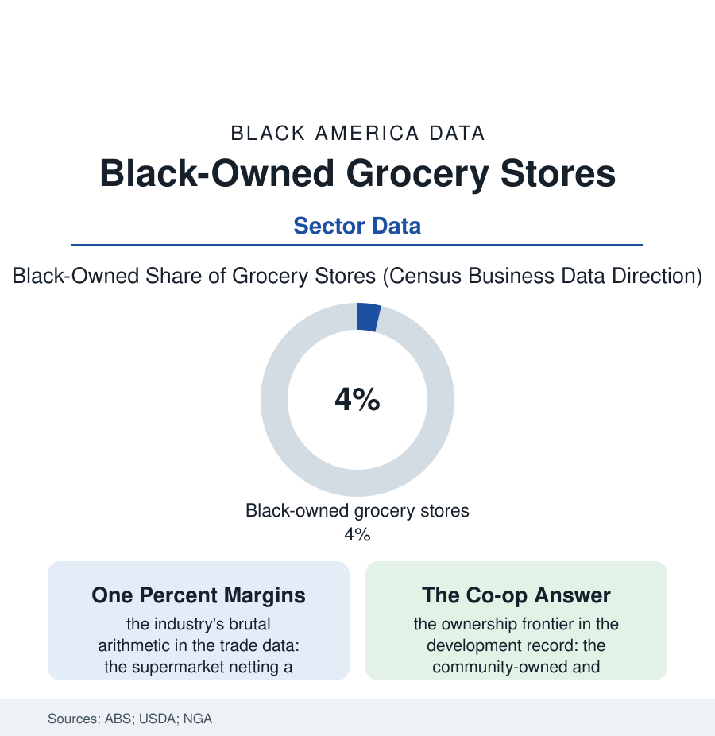

Black Business
The Supermarket File: Black-Owned Grocery in the Food Desert's Economy
The Black-owned supermarket is the hardest business in this section — thin margins, giant rivals, sacred purpose — the store whose survival is a neighborhood's food security. The grocery file.

No business in this book carries more meaning per dollar of margin than the Black-owned grocery store. The supermarket nets about a penny on the dollar in the industry's best years, competes against the largest retailers on earth, and anchors — where it survives — the food security of an entire neighborhood. This article reads the grocery file. Both records genuinely matter here, always truly have.
The Hardest Arithmetic in Retail
The obstacles stack in the data like the industry's own shelving: the capital intensity (the store's build-out and inventory priced in the millions before the first sale, the capital file's gates at industrial scale), the supply chain's terms (the independent's wholesale prices running above the chains' shelf prices at the retailer's own stores in the famous comparison — the distributor's volume tiers replicating the map of the chains' geography), the margin's thinness converting every friction into an existential one (the shrink, the spoilage, the labor of the fresh departments), and the location's cruel economics — the store needed most where the rooftops' purchasing power is thinnest, the USDA's food-access atlas and the grocer's pro forma describing the same census tracts in two vocabularies. The history holds the file's proud chapters in the same frame: the Jim Crow era's Black grocers as the business districts' anchors (the store extending the book credit that fed the neighborhood through the wage gaps — the grocer as the community's informal bank, its ledger the era's social document), the supermarket era's consolidation closing the independents of every race and the chains' urban retreat of the late twentieth century leaving the map the atlas now publishes — the neighborhoods in this book's cities where the nearest full-service store is a bus ride away, the dollar store's arrival in the vacancy documented in the food file's own terms. The surviving Black supermarkets — the regional chains of the South and Midwest whose names are civic institutions in their cities, the third-generation independents — stand in the trade data as the sector's proof of concept and its reproach: possible, at heroic difficulty, at margins that would clear out any merely rational owner.
The New Models at the Old Address
The recent openings write the file's live chapter, and their structures are the story: the cooperative stores (the community-ownership models — thousands of member-owners at a few hundred dollars a share — opening in the food-access map's most famous deserts, their governance the mutual-aid file in a charter), the public-private builds (the city assembling the land and the incentives, the operator recruited like a factory — the grocery store entering the economic-development file's toolkit at factory money, the argument being the hospital's: some infrastructure a neighborhood cannot be asked to attract at market rates), the smaller-format answers (the fresh-format minis, the mobile markets, the corner-store conversions of the health file's produce programs), and the chains' own diversity shelves (the Black grocer franchising within the regional banners, the ownership programs of the wholesalers). The online file cuts both ways in the data: the delivery platforms erasing the distance penalty for the household with the card and the address the drivers serve, the SNAP-online era's incomplete map leaving the store's core customer partially offline from the rescue. The census counts the Black-owned grocery codes' firms in the low thousands, most of them small-format. The file's own count is kept at the neighborhood level, in a unit no dataset publishes: the number of elders who can walk to fresh food. Where the Black supermarket stands, that number is a neighborhood. Where it fell, the bus schedule is the food policy — a sentence the grocery file offers as its whole thesis, and its standing offer to any capital that wants the hardest, proudest penny in American retail.
Reading the Grocery Data
The grocery file is the business section's moral center: the firm whose balance sheet is a neighborhood's dinner. The census counts the stores. The produce aisle — stocked, lit, and priced for the people outside the window — counts the mission, nightly, in the only audit the owners themselves trust. The owners check it themselves, on the floor, every morning.
More in Black Business
Black-Owned Businesses: Counts, Receipts, and the Representation Gap
About 161,000 Black-owned employer firms and three million solo ventures: how the Census Bureau counts Black business ownership, where firms concentrate, and the gap between population share and business share.
Black Median Net Worth: The Wealth Gap in Federal Reserve Data
The Federal Reserve puts Black median family net worth at $44,900, against $285,000 for White families — about 16 cents on the dollar. The widest gap in economic data.
Black Buying Power: The $1.8 Trillion Consumer Economy
Black buying power is estimated at about $1.8 trillion — larger than the economy of most nations. What the figure measures, who produces it, and what it buys.
Source: U.S. Census Bureau Annual Business Survey; USDA Food Access Research Atlas; National Grocers Association data; cooperative development research.